EECS 351 · Digital Signal Processing · Fall 2026
Speech Denoising Using
Time–Frequency Filtering
Group 11 · Dayong Fang · Leyu Jiang · Jingyu Liu · Siqi Gong

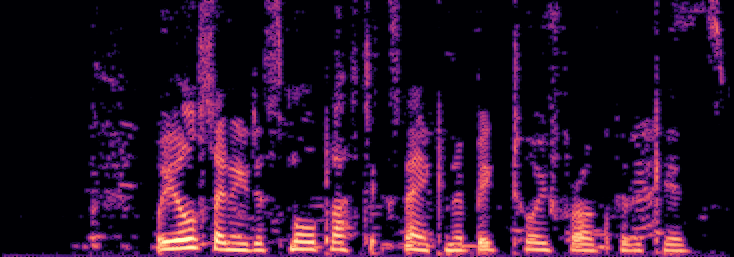

The Denoising Problem
From y[n] alone, remove the noise and keep the original voice.
Speech and noise overlap in time and frequency. Too little suppression leaves noise; too much removes quiet sounds and word beginnings.
Data: VoiceBank–DEMAND
- Source: public dataset from the University of Edinburgh; speech from the Voice Bank corpus, noise recorded with the DEMAND set
- Type: paired recordings, the same sentence clean and with noise added; mono, resampled 48 → 16 kHz
- Why paired: the clean version lets us score every method and build training targets
| Training | Test | |
|---|---|---|
| Pairs | 11,572 | 824 |
| Speakers | 28 | 2 (new) |
| Noise types | 10 | 5 (new) |
| SNR (dB) | 0, 5, 10, 15 | 2.5 – 17.5 |
Test noise types (noise only)
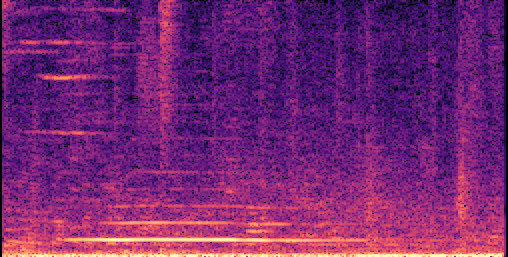
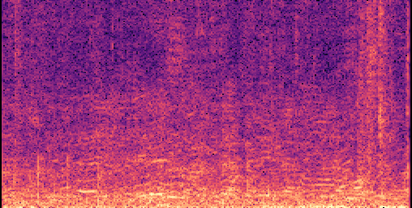
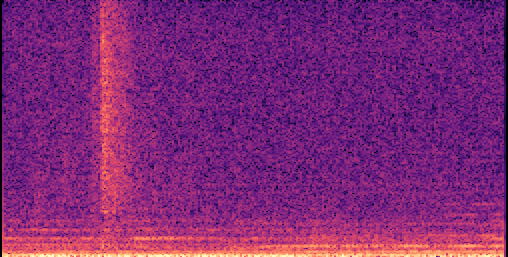
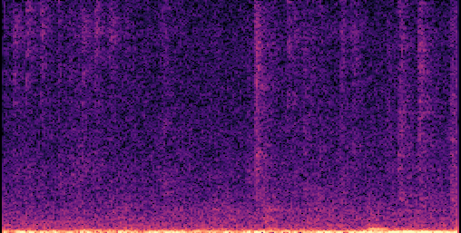
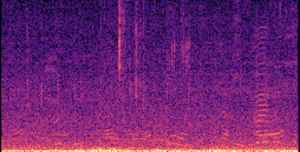
C. Valentini-Botinhao, Noisy speech database for training speech enhancement algorithms and TTS models, University of Edinburgh, 2017.
Method 1: FIR Band-pass Filter
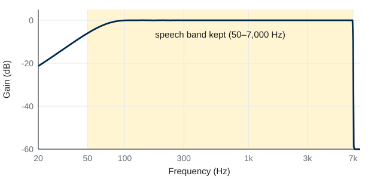
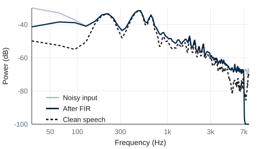
Works for low-frequency rumble (bus, office), but cannot remove noise inside the speech band → we need a gain that changes over time and frequency.
Method 2: Wiener Filter
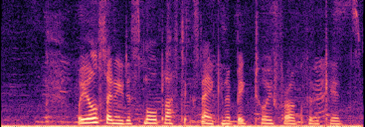
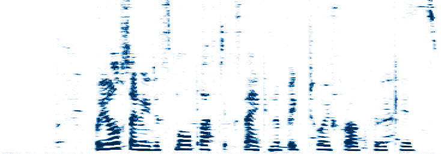
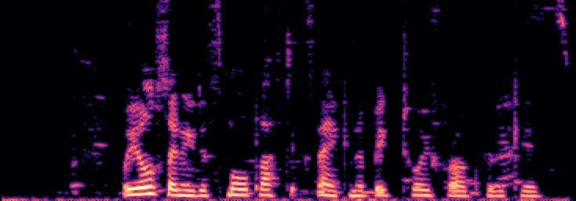
G = ξ / (1 + ξ)
- ξ: estimated speech-to-noise ratio of each bin
- Estimated from the noisy signal with smoothing α
- Each 10 ms frame and each frequency gets its own gain
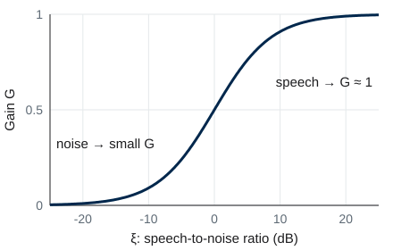
Wiener Filter: the Smoothing Parameter α
ξ(k,m) = α · |Ŝ(k,m−1)|² / N(k) + (1 − α) · max(|Y(k,m)|² / N(k) − 1, 0)
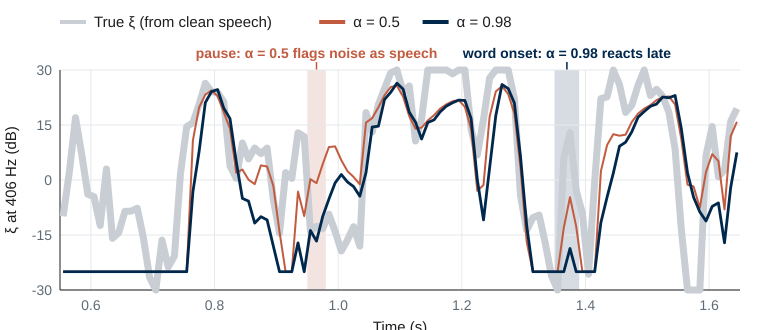
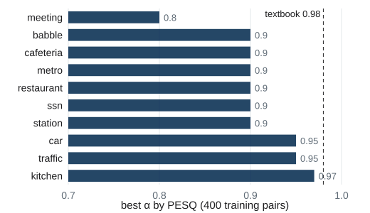
One fixed α cannot be both fast at word onsets and smooth in pauses.
Decision-directed estimate: Y. Ephraim and D. Malah, IEEE Trans. ASSP, 1984; P. Scalart and J. Vieira Filho, ICASSP, 1996.
Method 3 (Ours): Learned α
spectrogram
speech
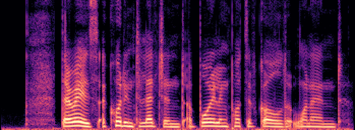
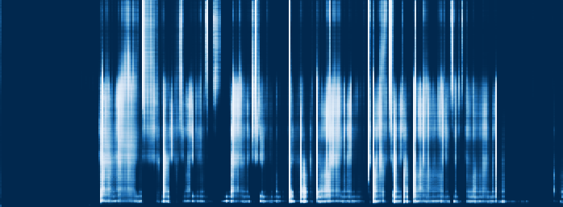
- Replaces the fixed α with α chosen per bin
- Trained on 10,802 clean / noisy pairs
- Target: ideal Wiener gain; loss goes back through the ξ recursion
- Starts at α = 0.98, i.e. the textbook filter
Results: Audio Example
Office noise, 2.5 dB SNR
Results: 824 Test Recordings
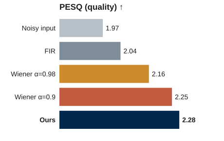
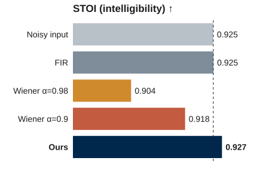
Fixed-α Wiener filters trade intelligibility for quality. The learned α improves quality and keeps intelligibility; the gain is largest in the noisiest recordings (2.5 dB SNR).
Mean over 824 test pairs. Each method uses one setting chosen on training data. Dashed line: STOI of the noisy input.
Limitations and Next Steps
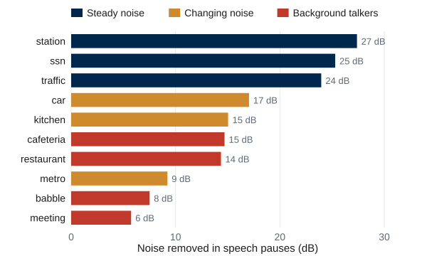
Limitation
- Background talkers (babble, meeting) are hardly removed: energy-based methods cannot tell the target voice from other voices
Next steps
- Learn the noise estimate so it follows changing noise
- Handle background speech
- Finish the website report (due Dec 13)
Thank you! Questions?